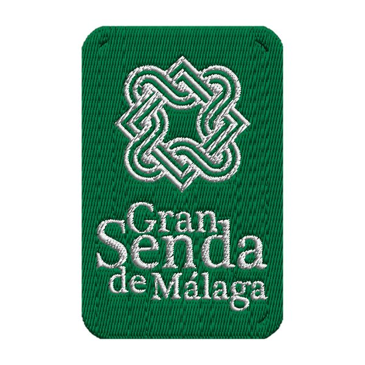

Gran Senda de Málaga
Rectángulo vertical · 5,7 × 8,9 cm
La Gran Senda de Málaga es un sendero de gran recorrido que da la vuelta a toda la provincia, de la costa a las sierras. Un recuerdo para quien ha recorrido la ruta, entera o por etapas.
19,99 €Próximamente en Amazon